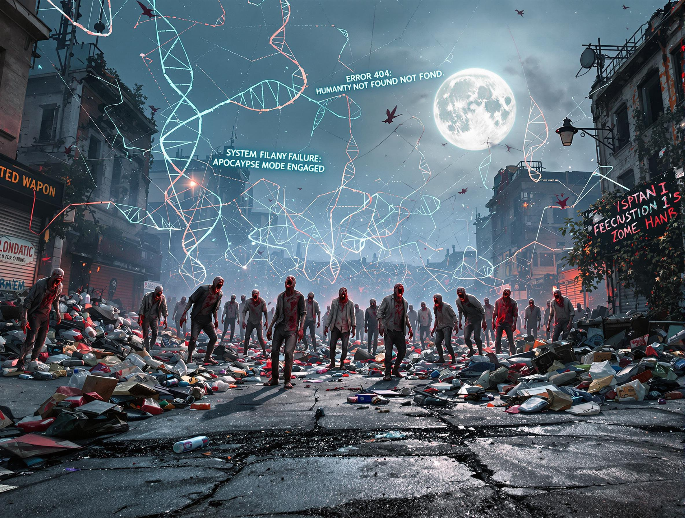

Plastiril
Bioaccumulation of microplastics in decedent human brains,
Science, February 2025

Luisa jolts awake in the night. From the lower floors, incessant sequences of sharp blows and the cold light of the northern dawn. It's just 5 AM, and Luisa won't fall back asleep. She gets up to check that the door is bolted and collapses to the ground. The medium waves barely cover the dull sounds; distant, mechanical voices announce the naval bulletin and the movements of new formations in the North Atlantic. For two weeks now, the voice of David Bowie has been singing the end of the world in just Five Years. An overly optimistic prediction: the streets of Minsk are flooded, and plastic piles up at the corners of the streets. An open-air dump for other palates.
After an indeterminable time, the noise ceases, and she drags herself to the desk, moving piles of books and scientific journals to make room for her laptop. She had wondered if solitude would at least help with order, but it hadn't been so. The electrical system hadn't failed yet, but she had gotten used to the idea that this modern luxury would soon be gone. After all, she had no idea what was happening outside, didn't know the scale of the tragedy. Without irony, at the height of its success, the information society existed on the most established technology. Too bad the radio only broadcast mechanized bulletins from the North Sea. She knows nothing. Nothing about her friends, nothing about the people she saw at the office, nothing about the powerful or the last. But she knows the details perfectly. She collaborated on the creation of Plastiril and keeps all the data on her work computer. On her PC, there's enough information to reconstruct and simulate the onset of the mutation. Maybe it's not very useful, but at least it keeps her busy. Under her touch, screens of alphanumeric characters scroll endlessly. The stroke of genius had been to start with the simplest bacterium. E.C. The masterpiece of life on the planet. Synthetic biology had done the rest. Meanwhile, the screen illuminates her face. Clumps of nucleotides intertwine in virtual fragments of DNA. Synthetic biology had repeated itself in the miracle of creation. New metabolic networks are established in a few seconds instead of eons. Mutations that evolution will never undertake. Science had reassured the public. Upon contact with the bacterial membrane, microplastics dissolve under the effect of synthetic enzymes. Plastic will no longer be a problem. In engineered mitochondria, polymer chains transform into ATP. From now on, you can eat plastic! No need for God; an IBM QuantumCore would be enough to guarantee life on Earth.
The code proceeds with the electric harmony of transistors, billions of sequences... ERROR: MemoryError. Maybe too many for her laptop. It's the sixth time she rewrites the algorithms to adapt them to the lower computing power, but it seems clear to her that the corporate cluster cannot be replaced by either patience or the genius of desperation. "Damn! We need an idea!" Dissatisfied, she kicks the boxes on the ground; crumpled papers and pieces of plastic come out. Alone, scared, resigned, desperate. Adjectives that have been swirling in her head for days; she must have written them a hundred times in letters to no one, but it doesn't help much. In a few hours, they start to coil again in the folds of her brain, and hunger accompanies them, alien hormones she struggles to keep at bay. The same sequences scrolling on the screen intertwine in her guts; millions of microscopic beings interfere with her nervous system. The packaging on the ground seems to resonate with a primordial cry of unicellular life. Fortunately, she knows what to do. She knows everything about the synthetic life that inhabits her intestines. In the kitchen, she pours a few drops of antibiotic into a bowl, mixes it with oatmeal and grapefruit concentrate, and swallows it. An ascetic diet for a hunger that doesn't belong to her.
With the bowl in hand, she sits on the carpet, legs crossed, in the dim light of a gray sky like a screen on standby. Slowly, she rereads the documents and public appeals for the tenth time, looking for answers that don't exist. As if there had been a shred of planning. Plan what? The end? It's useless; a bit of authoritarianism is enough to give a touch of style, of true humanity. And then, some even went to mass before discovering Plastiril in the holy water. In any case, gatherings had been effectively banned. And no one expected it to happen in 20 days; no one had thought there were still curfew laws. In any case, it was useless. The mutation happened at home. The distribution of antibiotics ended up in the toilets because the candy wrappers were tastier. Plastiril was a far too welcome guest for the intestine. Plastiril liked plastic far too much. Within two weeks, hormonal imbalances took over. At first, serotonin led into a lysergic state, similar to the effects of hallucinogenic mushrooms, then down headlong. The newspapers had barely had time to coin the term—Plastificati—before shutting down. And YouTube had banned the videos long before they went viral. The pharmaceutical company had been placed under seals, but the police had stopped responding to orders to devour the samples, including the polystyrene test tubes. Twenty-five days after the distribution of Plastiril as an over-the-counter drug, it was almost impossible not to have come into contact with the bacterium. In 40 days, human civilization was offline.
TOC! A sharp knock at the door terrifies her. TOC TOC—knocking. Until now, no one had ever knocked, and given the situation, it doesn't promise anything good. In silence, she moves to the entrance. More knocks, but nothing like the unconscious rage that animates the gestures of the Plastificati. Slowly, she gets up from the ground and looks through the peephole. On the other side of the door she hasn't opened for days, there is a human face. A frightened woman stares without seeing her. "What?! How is it possible? That others have survived?" The figure on the other side of the lock hits the door again and emits a faint, incomprehensible sound. Then, resigned, she moves away toward the next door. She doesn't know what to do. Opening seems like a big mistake; she has enough food for a few more weeks and isn't desperate enough to let someone into the house. And yet! And yet the woman moves slowly, too gracefully to be under the influence of the hormones released by Plastiril. She waits, listening as the figure descends the stairs. Curiosity, the need to understand, guides her hands. Hastily, she turns the latch, pushes down the handle, and in an instant finds herself on the landing. The woman hadn't yet finished descending the ramp of the lower floor; she turns, and for a few minutes, they stare at each other. Happiness and terror. Luisa takes her hand and, without saying anything, guides her into the house.
The woman doesn't speak, struggles to articulate, but her eyes say a lot. She seems not to remember or even know anything. She flips through the magazines in amazement while Luisa conducts tests under the microscope. Judging by her appearance, she's about 30 years old, and the little machine she stole from the lab shows a bacterial load just outside the norm; it's workable. Besides, Luisa is certain of the total inability of the Plastificati to disguise their miserable condition. She has hidden a kitchen knife under the sofa and hopes with all her heart never to have to use it. The World Organization for Ecosystem Safeguarding had reported in National Geographic for months that the density of microplastics in the water of half the world had skyrocketed to toxic levels after the fires in Bangalore and Bombay. The plastic war had been resolved in the worst way. Page by page, the devastation piles up in the eyes of the stranger. Images from three months earlier show the crowding of polymeric islands off the coast of Great Britain; a few weeks later, the digestive system of almost the entire animal kingdom was clogged with synthetic neoplasms. When Plastiril was released on the market, no one had objected. Luisa offers her a triple dose of grapefruit and antibiotic and sits beside her. In a now-uninhabited city, having someone to talk to is a gift she couldn't have expected. "So, you don't remember anything? How did you get here? Where were you in the past few days?" The woman responds with sobs and broken sounds. Then, suddenly, she begins to wave her hands in the air. The gestures slowly take the form of a language Luisa doesn't understand. The Russian sign alphabet was almost incomprehensible, but it didn't matter much. Luisa stands up, opens the closet, and pulls out a bucket of crayons.
There was an infinite time to draw the end.